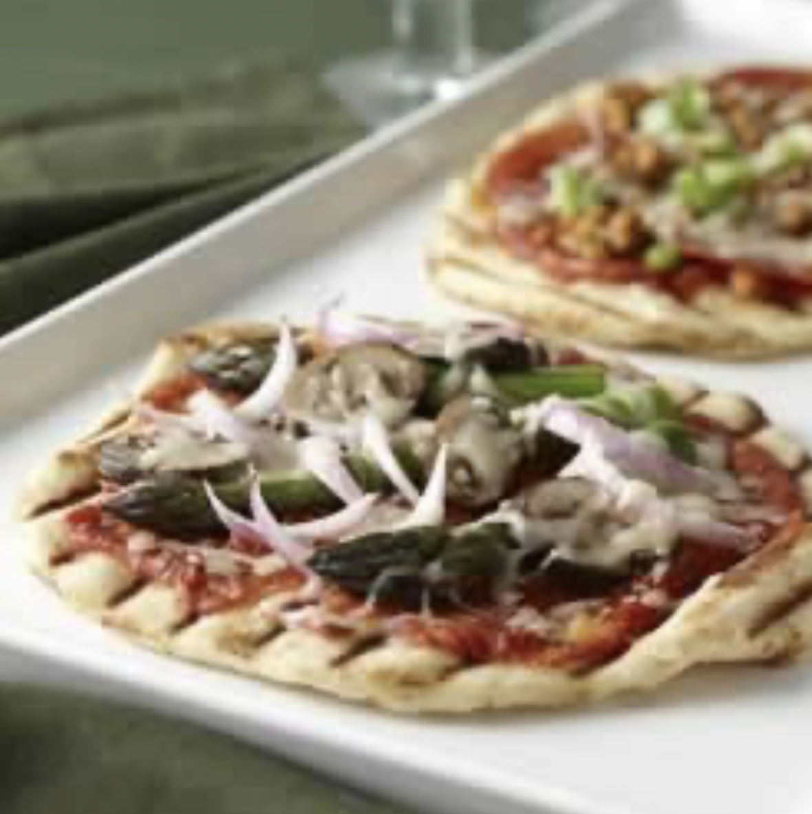

Grilled Pizza Recipe

Ingredients:
- 3 ½ cups all-purpose flour, or as needed
- 1 envelope pizza crust yeast (such as Fleischmann's)
- 1 tablespoon white sugar
- 1 ½ teaspoons salt
- 1 ⅓ cups warm water (120 to 130 degrees F/49 to 54 degrees C)
- ⅓ cup oil, and more as needed
- ½ cup pizza sauce, or to taste
- ½ cup shredded mozzarella cheese, or to taste
Follow These Steps:
- Preheat an outdoor grill for medium-high heat and lightly oil the grate.
- Combine 2 cups flour, yeast, sugar, and salt in a large bowl; stir in warm water and ⅓ cup oil until well combined, about 1 minute. Gradually add enough flour to form a slightly sticky dough ball. Turn dough out onto a floured work surface; knead until dough is smooth, elastic, and not sticky, about 5 minutes.
- Divide dough into 8 equal portions; pat or roll dough portions on a floured work surface to about 8-inch circles (they don't need to be perfect).
- Brush both sides dough circles with oil; place on the grill. Cook on the preheated grill until bottoms are lightly browned and tops look set, 3 to 4 minutes. Transfer crusts to a baking sheet, grilled-sides up, using long-handled tongs.
- Lightly coat each crust with sauce; top with cheese.
- Slide pizzas back on the grill; cook until bottom crusts are brown and cheese melts, 3 to 4 minutes. Serve immediately.
Cooking Tips:
To knead the dough, add just enough flour to the dough and your hands to prevent sticking. Flatten the dough and fold it toward you. Using the heel of your hand, push the dough away from you with a rolling motion. Rotate the dough a quarter turn and repeat. Keep kneading the dough until smooth and elastic.
The dough may be made up to 24 hours in advance, covered, and refrigerated. Punch down the dough; portion it, and complete the remaining steps when ready to make pizzas.